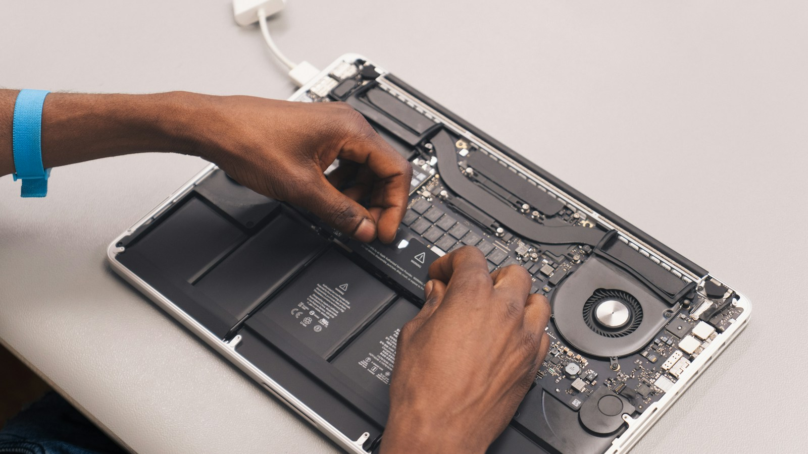
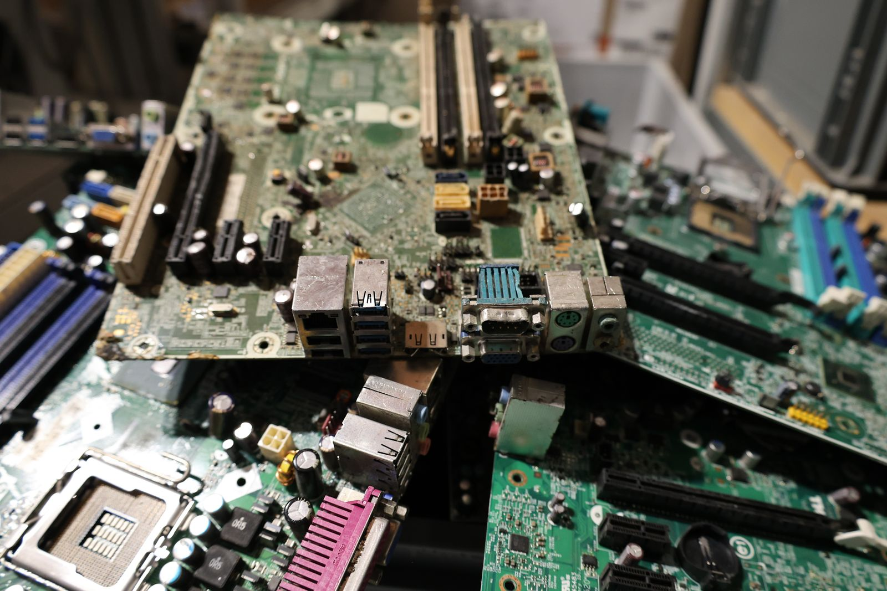

Votre ancien ordinateur a encore une vie, ici.
Réemploi 74 collecte gratuitement vos ordinateurs, écrans, serveurs et téléphones en Savoie et Haute-Savoie, efface les données avec certificat, puis les remet en service près de chez vous. Vous choisissez : don solidaire ou offre de rachat, sans créer de compte.

Enlèvement gratuit
Nous venons chercher votre matériel chez vous ou dans vos locaux, dans les 10 jours suivant votre accord, à partir de 3 équipements ; en dessous, vous le déposez à l'atelier sur rendez-vous.
Effacement certifié
Chaque disque est effacé selon la norme NIST 800-88 (Purge quand le matériel le permet, Clear sinon) et vous recevez un certificat par disque, rattaché à votre code de suivi.
Retour local
Votre matériel est effacé, testé, réparé et remis en service en Savoie et Haute-Savoie : il repart en priorité vers une école, une association ou un foyer du territoire (don), ou est revendu localement (rachat). Pas à l'autre bout du monde.
Donner, ou vendre. Dans les deux cas, nous nous occupons du reste.
Le don
Vous cédez votre matériel sans contrepartie financière. Nous le remettons en état et il repart vers une école, une association, un foyer modeste ou une structure d'insertion du territoire.
- Attestation de cession et bordereau de traçabilité remis lors de l'enlèvement
- Certificat d'effacement par disque, envoyé dès l'effacement
- Moins de 3 équipements : dépôt à l'atelier sur rendez-vous
- Reçu fiscal possible via une association partenaire d'intérêt général, nous consulter
L'offre de rachat
Vous recevez une offre indicative sous 48 h ouvrées, sur la base de votre description et de vos photos. Elle est confirmée après diagnostic à l'atelier, puis réglée par virement sous 7 jours.
- Grille indicative : portable de moins de 5 ans fonctionnel 40 à 150 €, tour 20 à 80 €, écran 5 à 30 €, smartphone 20 à 120 €
- En dessous de 30 € de valeur estimée pour un appareil, nous vous proposons le don plutôt qu'un rachat
- Le matériel racheté est effacé, testé sur toutes ses fonctions, remis en état si besoin, puis revendu localement avec la garantie légale de conformité de 2 ans pour les particuliers
Quatre étapes, des délais affichés.
Vous déclarez
Vous décrivez votre matériel dans le formulaire (type, quantité, état, photos) et vous recevez aussitôt un code de suivi. Pas de compte à créer.
immédiatNous répondons
Une offre de rachat indicative si vous l'avez demandée, ou la confirmation de prise en charge pour un don.
sous 48 h ouvréesNous enlevons
Chez vous ou dans vos locaux, à partir de 3 équipements. Vous signez le bordereau de traçabilité et recevez votre attestation de cession.
dans les 10 jours suivant votre accordEffacement, puis diagnostic
Nous effaçons chaque disque et vous envoyons les certificats, puis nous testons toutes les fonctions. En cas de rachat, le virement part après le diagnostic.
virement sous 7 jours après diagnosticCe qui peut resservir. Le critère n'est pas l'âge, mais l'état.
L'appareil démarre, l'écran s'affiche, aucun verrouillage ne bloque la remise en service : nous le prenons. Le détail par catégorie, avec ce que nous laissons.
Et le matériel qui ne peut pas être réparé ? Réemploi 74 n'est pas un service d'enlèvement de déchets. Le matériel hors service n'est accepté qu'en complément d'un lot fonctionnel ; seul, il relève de la déchèterie ou de l'éco-organisme agréé. Quand un appareil collecté s'avère irréparable, il est démonté : mémoire, disques, alimentations et dalles servent à réparer d'autres machines ; ses disques sont effacés avant toute réutilisation en pièce, et un disque défaillant est détruit physiquement. Ce qui ne peut pas resservir est remis à un éco-organisme agréé, avec bordereau de traçabilité. Rien n'est jeté par nos soins.
Ce que change un appareil qui continue de servir
Recycler, c'est broyer un appareil pour en récupérer une partie des matériaux. Prolonger, c'est éviter d'en fabriquer un neuf.
Pour un ordinateur, l'essentiel du carbone est déjà émis avant la première mise sous tension : chaque année d'usage gagnée est une année de fabrication évitée, et une part des 800 kg de matières qui restent dans le sol. Le recyclage reste utile en dernier recours, mais il ne rattrape jamais le carbone émis ni les matières perdues. C'est pourquoi nous réparons et remettons en service d'abord, et ne démontons pour pièces que ce qui ne peut vraiment plus servir.
| Appareil | CO2e à la fabrication | Part de l'empreinte totale | Durée d'usage de référence |
|---|---|---|---|
| Ordinateur portable | 182 kg | 95 % | 5 ans |
| Tour, usage particulier (ordinateur fixe sans écran) | 262 kg | 87 % | 6 ans |
| Écran 24 pouces | 66 kg | 71 % | 6 ans |
Source : Impact CO2 (ADEME), pages ordinateur fixe et écran. Valeurs actualisées par l'ADEME ; relues chaque année.

Ce que le réemploi évite : des cartes broyées pour quelques grammes de métaux. Photo Pexels.
Il repart en priorité vers ceux qui en ont besoin, ici.
Le matériel donné est proposé en priorité aux structures du territoire. Une fois effacé, testé et réparé si besoin, il repart d'abord en Savoie et Haute-Savoie vers :
- des écoles et établissements scolaires, pour équiper des classes ou des élèves ;
- des associations, pour leur fonctionnement ou leurs bénéficiaires ;
- des foyers modestes, par l'intermédiaire des structures sociales qui les accompagnent ;
- des structures d'insertion, pour la formation et le retour à l'emploi.
Nous ne citons aucun bénéficiaire sans son accord et ne publions aucun chiffre que nous ne pouvons pas justifier. Quand nous aurons des résultats vérifiables à partager, ils seront ici, avec leur source.

Chaque disque est effacé, et vous recevez le certificat.
Vos données sont la première chose que nous traitons, avant toute réparation et avant tout test. Numéro de série, méthode, outil, date, opérateur et empreinte de vérification : un document par disque, rattaché à votre code de suivi. Un équipement ne repart pas en service sans lui, qu'il ait été donné ou racheté.
- Équipement
- Ordinateur portable 14", 2019
- Support
- SSD NVMe 256 Go · S/N XXXXXXXXXXXX
- Méthode
- NIST 800-88 · Purge (NVMe Sanitize)
- Vérification
- Relecture complète · réussite
- Empreinte
- sha256:3f9a…c21e
- Opérateur
- A. F. · 2026-09-15
Ce qu'on nous demande le plus souvent
Vous venez chercher un seul appareil ?
Puis-je garder mon disque dur ?
Que devient le matériel que je donne ?
Mon don est-il déductible des impôts ?
Pour choisir en connaissance de cause
Que faire de vos vieux ordinateurs ?
Réemploi, pièces ou déchèterie : le bon réflexe selon l'état de l'appareil, et ce qu'il ne faut pas faire.
Donner à une association ou une école
Ce dont les structures ont besoin, donner directement ou passer par nous, ce que vous recevez.
Effacer ses données avant de vendre ou donner
Sauvegarder, déconnecter ses comptes, effacer selon le support : la liste de contrôle.
Un ordinateur qui dort ne sert à personne.
Un formulaire, un code de suivi : nous nous occupons du reste, gratuitement, en Savoie et Haute-Savoie. Enlèvement dès 3 équipements, dépôt à l'atelier en dessous.